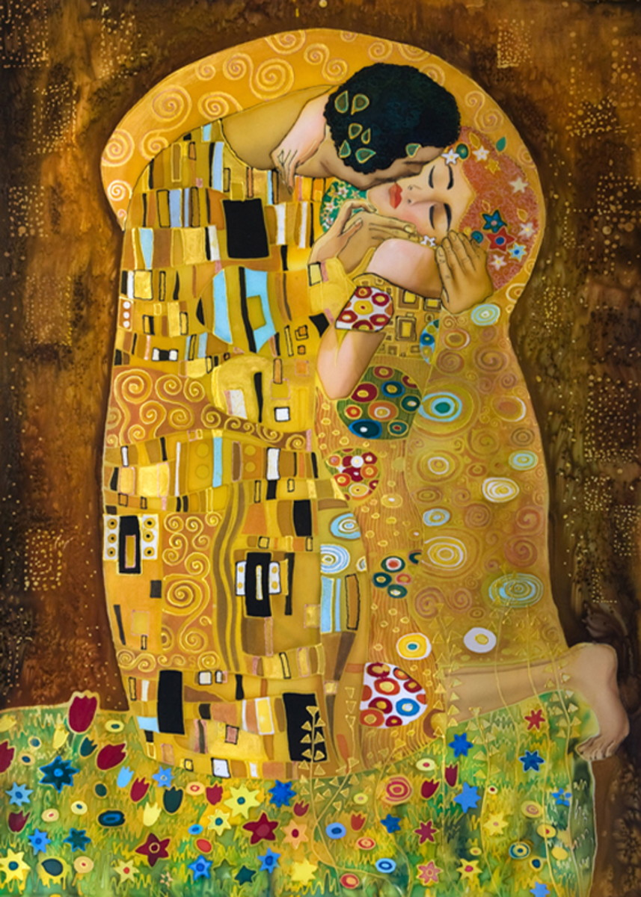
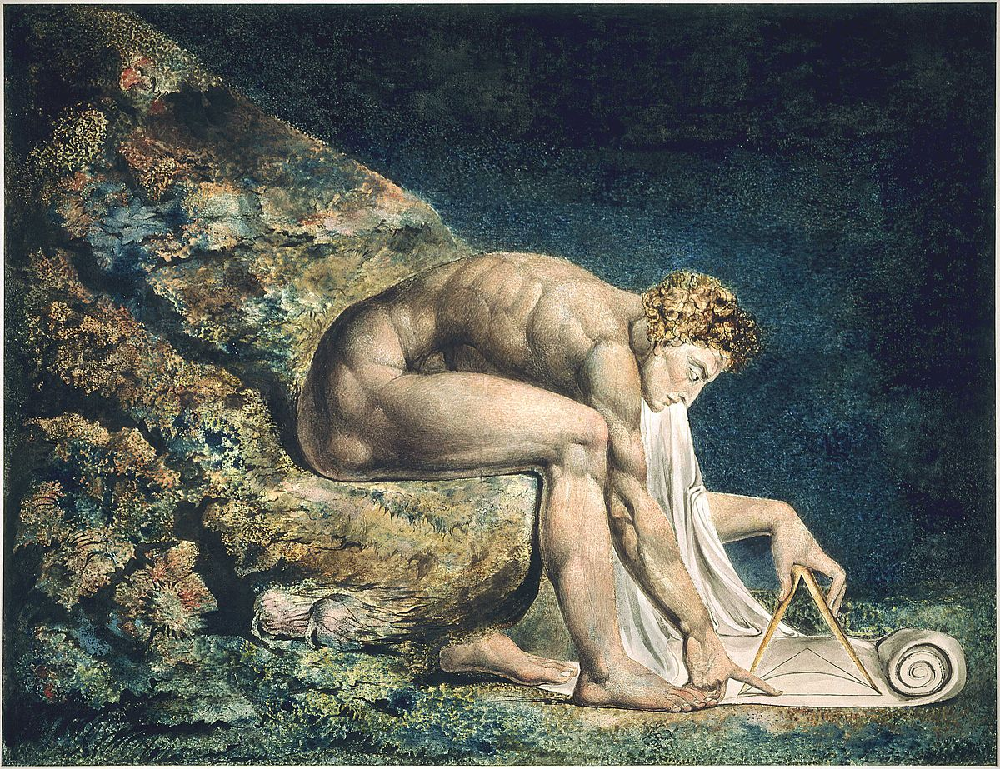

abaporu
Tarsila do Amaral

american gothic
Grant Wood

autorretrato con collar de espinas y colibrí
Frida Kahlo

der kuss
Gustav Klimt

de sterrennacht
Van Gogh

l'escarpolette
Jean-Honor'e Fragonard

l'ultima cena
Leonardo da Vinci

scuola di atene
Rafael Sanzio

le fils de l'homme
René Magritte

newton
William Blake